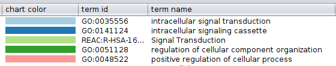

Analysis Through Orange
Luminal A
Gene Expression Color
- Eigenvector Size
- Oncogenicity Size
- Comparison: Eigenvector Size vs Oncogenicity Size
- Eigenvector Size / Community (Leiden/modularity) Border Color
Community (Leiden/modularity) Color
- Enrichment Border Colors
